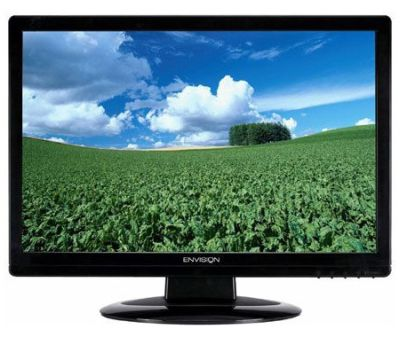

El hardware de una computadora se refiere a todos esos elementos que son tangibles en una computadora, los dispositivos de hardware que son “indispensables” para el correcto funcionamiento de una computadora. A continuación, presentamos algunos de ellos:
Teclado Virtual
El teclado
Es el dispositivo que le brinda la posibilidad al usuario introducir datos para que después puedan ser interpretados y procesados por la CPU. El aspecto de un teclado de ordenador es bastante similar al de una máquina de escribir y actualmente su clasificación está conformada de la siguiente manera: teclado XT, teclado AT, teclado expandido, teclado Windows, teclado ergonómico y teclado inalámbrico.
Cabe destacar que en la mayoría de los sistemas operativos modernos se pueden utilizar teclados virtuales (en pantalla ó monitor) que pueden ser operados con el ratón, brindándole la posibilidad al usuario de simular el funcionamiento de un teclado real.
CPU intel
Unidad Central de Proceso
Comúnmente conocido como microprocesador, es el encargado de procesar los datos contenidos en los programas e interpretar las instrucciones del usuario. La evolución de la tecnología en este rubro ha sido tan grande que actualmente existen microprocesadores con doble núcleo que, básicamente son dos procesadores en uno mismo, lo que les permite aumentar considerablemente la capacidad de procesamiento de datos de una forma más rápida.

Fotografía de Monitor
Monitor
Es el dispositivo que, por medio de una interfaz, permite al usuario poder visualizar los datos previamente procesados por el CPU. La unidad mínima que se puede representar en un monitor es denominada Píxel, que se puede definir como cada uno de los puntos que conforman una imagen digital. Actualmente lo último en tecnología son los monitores de cristal líquido (LCD, por sus siglas en ingles).
Fotografia de un mouse inálambrico
Ratón
En informática, un mouse ó ratón es el dispositivo que, al igual que el teclado, permite enviarle instrucciones a una computadora mientras este interactúa con una interfaz gráfica. Hoy en día es un dispositivo imprescindible en un ordenar, pero, se prevé que en un futuro no muy lejano este dispositivo desaparezca, dejándole esta tarea a los ojos humanos.